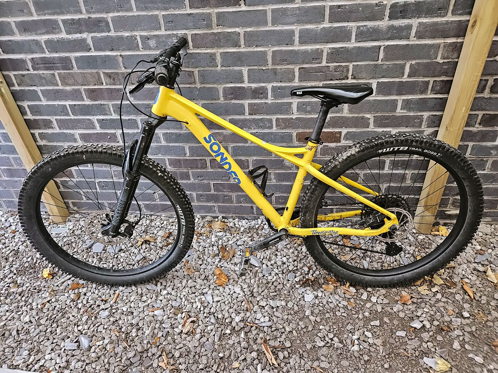
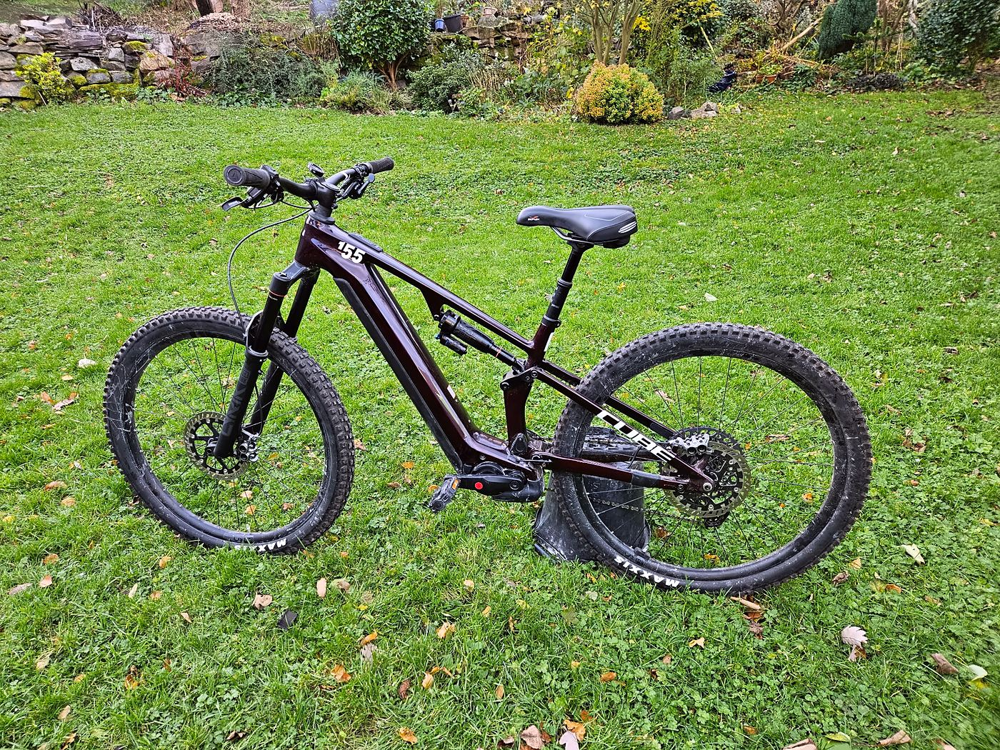
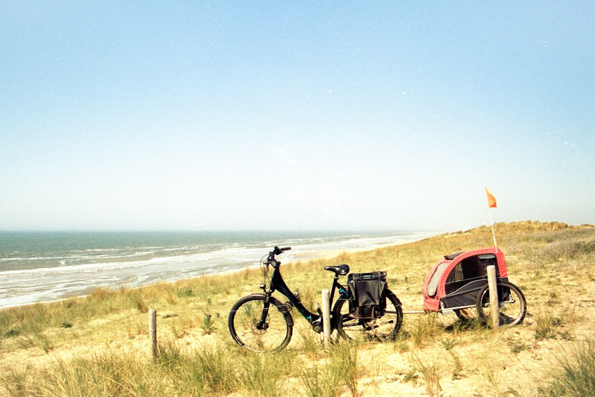
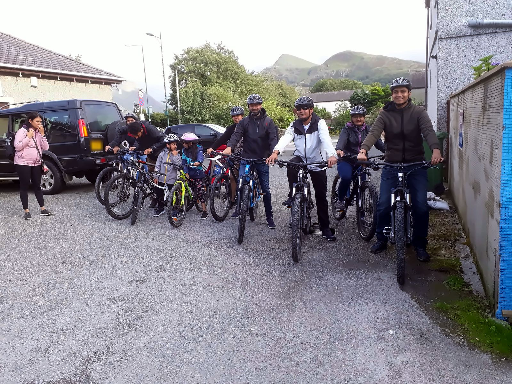

Hardtail mountain bike
Our everyday mountain bike: light, easy to ride and happy on the lakeside paths, the quarry tracks and the hills.
Bikes and prices › Which bike?
Answer a few quick questions and we'll suggest the right bike, with a button to request it.

Our everyday mountain bike: light, easy to ride and happy on the lakeside paths, the quarry tracks and the hills.

Our bikes for Snowdon: the motor helps you up the long climb, and suspension front and back smooths out the rocks on the way down.

A helping hand on the climbs, so you can keep up with your group and still enjoy the views at the top.

Made for tarmac, so it's the one for the Llanberis Pass and the coast roads.

We have them in a range of sizes, so put your child's height on the request and Nigel will have the right one ready.

Our double trailers are for little ones who'd rather sit back and be pulled along behind a grown-up's bike.

For younger riders who'd like to pedal: it joins on to a grown-up's bike, so they can ride along with you.
Snowdon is by arrangement with Nigel, on one of our full-suspension e-bikes. It's a hard ride, so he'll only hire a bike for the mountain if he thinks you're up to it. If you're newer to mountain biking, he'll suggest a route that suits you instead. From 1 May to 30 September, please don't ride the Snowdon bridleways between 10am and 5pm. More about riding Snowdon
Riding with them? Choose "An adult or teenager" above to find a bike for yourself too.
Not sure? Nigel will help you choose. Call or text 07776 051559.